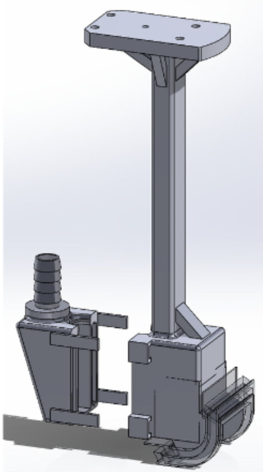

Redesigning a Robot End-Effector That Was Faking Its Own Defects
Boeing Advanced Research Center (BARC) · Mechanical Design Research Assistant · May 2023 – Jun 2024

The problem
Boeing inspects composite structures ultrasonically: a robot arm sweeps a probe across the part, the probe sends sound in and listens for the echoes that indicate delamination or voids. Sound does not travel usefully from a transducer into air, so the probe rides on a column of water that couples it to the surface.
On curved parts, scans were returning indications where the part was actually sound. False positives in this setting are costly in a specific way: you cannot ship a part you cannot clear, so every phantom indication becomes manual re-inspection or a scrapped component. The reported problem was "the scans are noisy." The actual question was whether the noise was coming from the part or from the instrument.
Diagnosis: FFT on the scan signal
I analyzed the scan signal in the frequency domain. The reasoning is that material defects are irregular — they appear where the flaw is and nowhere else — whereas an artifact produced by the fixture's own geometry repeats with the scan motion. A defect is broadband and localized; a geometric artifact is periodic and lands on identifiable frequencies.
The FFT separated those populations and identified two distinct root causes: one from the probe geometry itself, and one from inconsistent water coupling as the probe traversed curvature. Both were instrument artifacts. Neither was a defect in the part.
Fix 1 — a two-curve probe geometry
The parts being inspected do not have a fixed radius — the curvature varies continuously along the surface. That is what breaks the existing probe. A flat end-effector has one standoff distance that is only correct on a flat part, and a single-radius curved probe is only correct where the part happens to match its radius. Everywhere else, the gap between transducer and part changes with position, which changes the acoustic time-of-flight and moves where the echo lands in the inspection gate. That shift is what was being read as a defect.
I designed a novel two-curve probe, whose geometry accommodates a range of surface radii rather than assuming one, so the standoff stays within tolerance as the part's curvature changes underneath it. Design work in SolidWorks with GD&T and FEA, constrained to CNC-machinable geometry so it could actually be produced; I compared it against the prior flat and single-curve concepts, coordinated fabrication, inspected first articles, and validated by scan testing.
Fix 2 — the water column
The second cause was coupling. Wherever the water column thinned or broke, the acoustic path degraded and the signal-to-noise ratio dropped — producing exactly the intermittent indications being reported.
I redesigned the fixture and ran a structured validation plan across two iterations, improving water retention by 40%. That directly raised SNR and defect-detection reliability, because the inspection can only be as good as the acoustic contact it maintains.
Coverage path planning
I also implemented Boustrophedon cell decomposition for the robot's scan path — the coverage-planning problem of sweeping an entire surface while avoiding obstacles, with no gaps and minimal redundant passes:
- Identify obstacle coordinates in the workspace to avoid.
- Sweep a line across the space, detecting IN and OUT events via ceiling and floor pointers, which decompose the free space into cells that each admit a simple back-and-forth (boustrophedon) fill.
- Depth-first search over the cell adjacency graph to order traversal counterclockwise, so every cell is covered and the transit between cells is short.
Coverage matters for inspection in the same way it matters for any robot that has to service a whole surface: an unvisited cell is an uninspected region, and an uninspected region is indistinguishable from a passing one.
Outcome
- Geometry-induced scan artifacts eliminated from Boeing's composite inspection workflow.
- 40% increase in water retention, improving defect-detection reliability and SNR.
- Delivered as inspected, validated hardware — not a concept study.